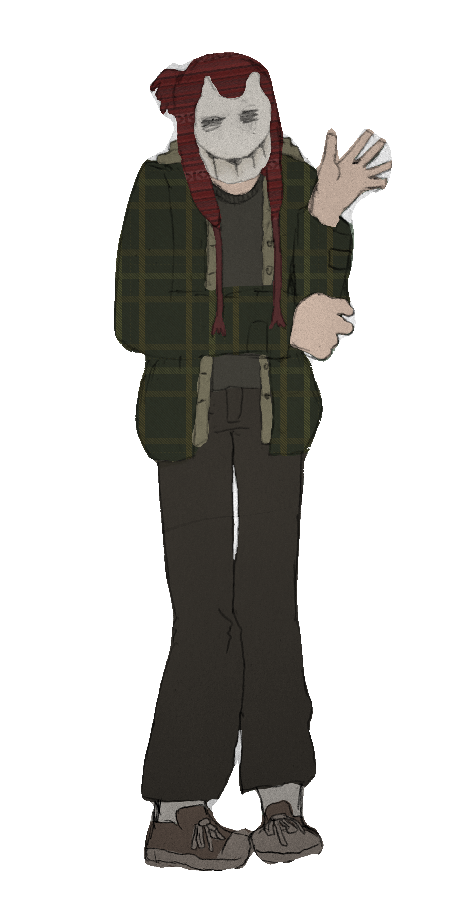

Introduction
Astravaile is the world I have crafted for my Dungeons and Dragons campaigns: The King Tide Festival (2023-2024) and The Eclipse of Faith (ongoing). Hopefully this webpage tells you all you need to know about the universe and the campaigns involved.
About the DM
Hi there! My name is Eli (he/him). I'm happy you could join me in my little corner of the internet. I get up to a lot of things--I'd link them, but most of my projects go unfinished. I enjoy roleplaying, drawing, writing, organization, hiking, and listening to music. My favorite genre is rock, though I'll listen to just about anything.